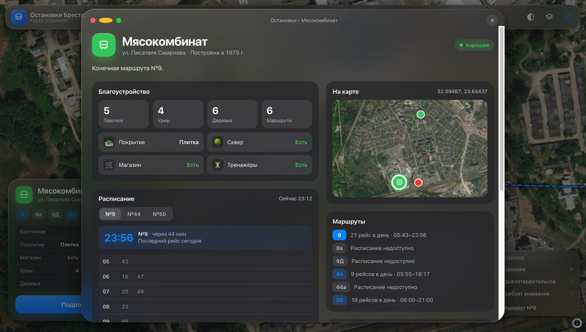
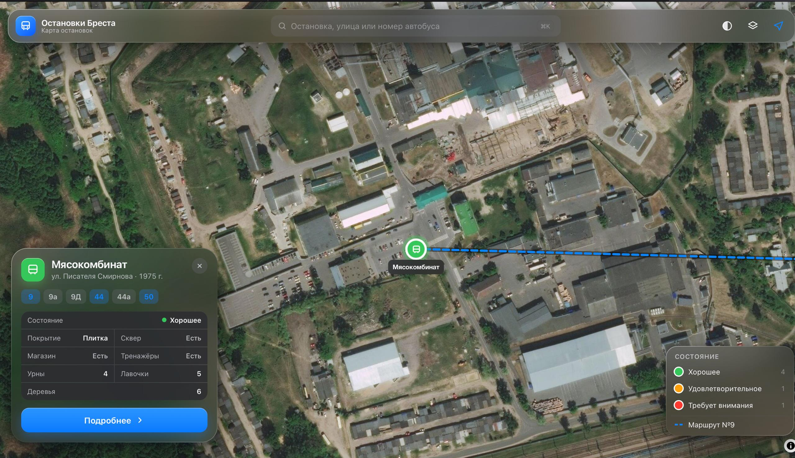
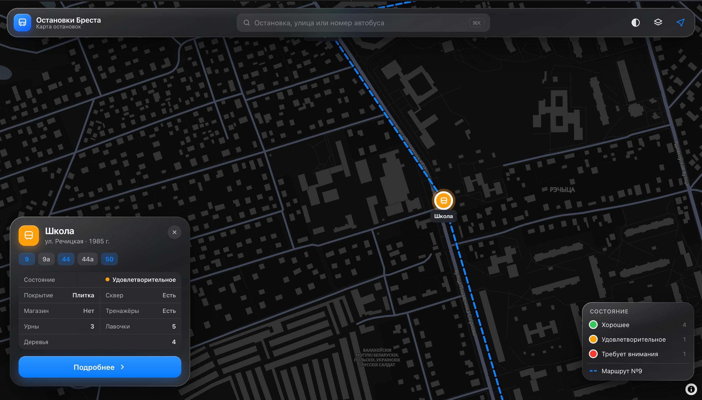
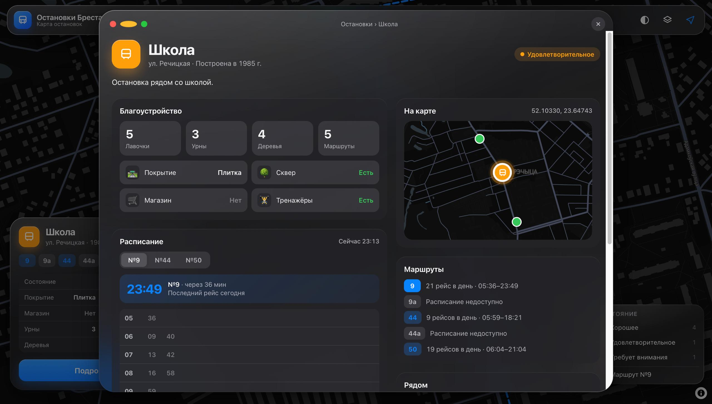

Актуальность исследования обусловлена необходимостью анализа состояния и благоустройства остановок общественного транспорта в микрорайоне Речица города Бреста. Остановки выполняют не только транспортную, но и важную социальную функцию, влияя на качество жизни населения.
Цель исследования — проведение анализа состояния и благоустройства остановок, а также визуализация данных в виде интерактивной карты (веб-приложения).
В Республике Беларусь требования к остановкам общественного транспорта регламентируются ГОСТ «Оборудование остановок общественного транспорта». Ключевые требования включают: безопасность материалов, наличие урн, освещение, доступность для маломобильных групп населения.
Анализ научных работ показал, что картографический метод практически не используется при изучении остановок. Это обосновывает необходимость создания интерактивной карты.
Микрорайон Речица расположен на юго-западе Бреста. На территории проживает более 25 тысяч жителей. Всего выделено 10 остановок общественного транспорта.
Состояние остановок оценивалось по следующим критериям: внешнее состояние, тип покрытия, наличие лавочек, урн, деревьев, тренажеров, скверов, магазинов.
| Остановка | Состояние | Покрытие | Урны | Лавочки |
|---|---|---|---|---|
| Речицкая | Хорошее | Асфальт | 3 | 4 |
| Хлебпром | Хорошее | Асфальт | 2 | 3 |
| Школа | Удовлетворительное | Плитка | 3 | 5 |
| Агротранс | Хорошее | Асфальт | 2 | 2 |
| База «Рыбторг» | Требует внимания | Трава | 0 | 1 |
| Мясокомбинат | Хорошее | Плитка | 4 | 5 |
Для визуализации данных было разработано веб-приложение (электронный атлас), доступное по QR-коду. В качестве картографической основы используется MapLibre GL с растровой подложкой OpenStreetMap.
Приложение позволяет:
Дизайн приложения выполнен в стиле macOS 26 Tahoe (жидкое стекло, плавные анимации). Это делает его не только функциональным, но и эстетичным.




В ходе работы была проведена инвентаризация остановок микрорайона Речица, собраны данные о благоустройстве и транспортной нагрузке. Создана интерактивная карта, которая позволяет наглядно оценить ситуацию.
Выявлены проблемные зоны: остановки в северной части микрорайона (например, «База Рыбторг») находятся в неудовлетворительном состоянии, не имеют урн и лавочек. Рекомендуется установить урны и обновить покрытие.
Интерактивная карта может быть использована органами местного самоуправления для планирования благоустройства.